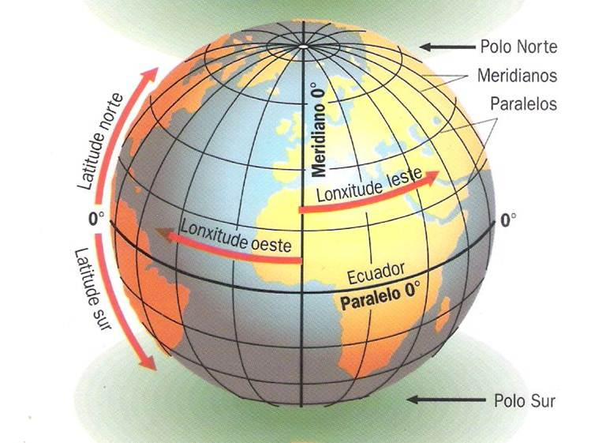
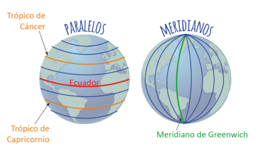

¿Qué son las líneas imaginarias?: meridianos y paralelos

Las líneas imaginarias son aquellas que el hombre utiliza para ubicarse o para encontrar un punto en la superficie terrestre. Estas ayudan, además, a dividir a la tierra en este a oeste y de norte a sur.Estas lineas imaginarias pueden dividirse en Meridianos, que son aquellas líneas imaginarias que pasan paralelamente al eje sobre que gira la tierra sobre sí misma y Paralelos que son las líneas que cortan perpendicularmente el eje sobre el que gira la tierra.
Líneas imaginarias: meridianos y paralelos del Planeta Tierra
El meridiano (Paralelas verticales) 0° es el del Greenwich, que pasa por la localidad que lleva su mismo nombre. Los grados aumentan hacia el oeste y hacia el este hasta llegar al antimeridiano que es el meridiano opuesto al de Greenwich, estos meridianos dividen a la tierra en dos hemisferios: Oriental y Occidental.
Los paralelos (paralelos horizontales) parten del Ecuador, paralelo 0° que divide a la tierra en dos hemisferios: Norte o Boreal y Sur o Austral.
Los trópicos son paralelos del ecuador y se encuentran ubicados a igual distancia, estas líneas imaginarias dividen a la tierra en zonas climáticas: al norte el trópico de Cáncer situado a 23°26´ y el Círculo polar Ártico a los 66°33´, al sur el trópico de Capricornio situado a 23°26´ y el Círculo polar Antártico a los 66°33´.
- Paralelos: ¡Latitud!
Los paralelos son líneas imaginarias horizontales que tienen orientación Este- Oeste. Son perpendiculares al eje terrestre y disminuyen de tamaño al acercarse a los polos. La línea del ecuador se conoce como paralelo 0°, que divide a nuestro planeta en dos mitades iguales: El hemisferio Norte y el hemisferio Sur. Los paralelos están numerados desde 0° en el Ecuador hasta 90° en el polo Norte y 90° en el polo Sur.
Los paralelos más importantes son los círculos polares y los trópicos. El círculo polar ártico (66° 33` N) está el hemisferio Norte y el círculo polar antártico (66° 33` S) está en el hemisferio sur.
El trópico de Cáncer (23° 27` N) se encuentra en el hemisferio Norte y el trópico de Capricornio (23° 27` S), en el hemisferio Sur.
Los paralelos nos permiten determinar la latitud de un punto, es decir, su posición al Norte o al Sur del paralelo del Ecuador, que corresponde a 0°, paralelo elegido como de referencia. Por lo tanto, la latitud de un punto puede definirse como el arco de meridiano, medido en grados, entre el lugar considerado y el Ecuador, o bien, como la distancia entre el paralelo de un lugar y el Ecuador, tomado como origen.

- Meridianos: ¡Longitud!
Los meridianos son líneas imaginarias verticales (o semicírculos) que van desde el Polo Norte al Polo Sur. Cada meridiano, con su respectivo antimeridiano, forma un círculo.
El meridiano de referencia es el meridiano 0°, o de Greenwich; su antimeridianos es el 180°. Ambos meridianos forman un círculo que divide a la Tierra en hemisferio occidental y hemisferio oriental. Los meridianos están numerados desde el 0° al 180°, hacia el este y hacia el oeste, completando 360° en total.
Los meridianos nos indican la longitud, que es la distancia medida en grados desde cualquier punto de la tierra al este o al oeste del meridiano 0°.